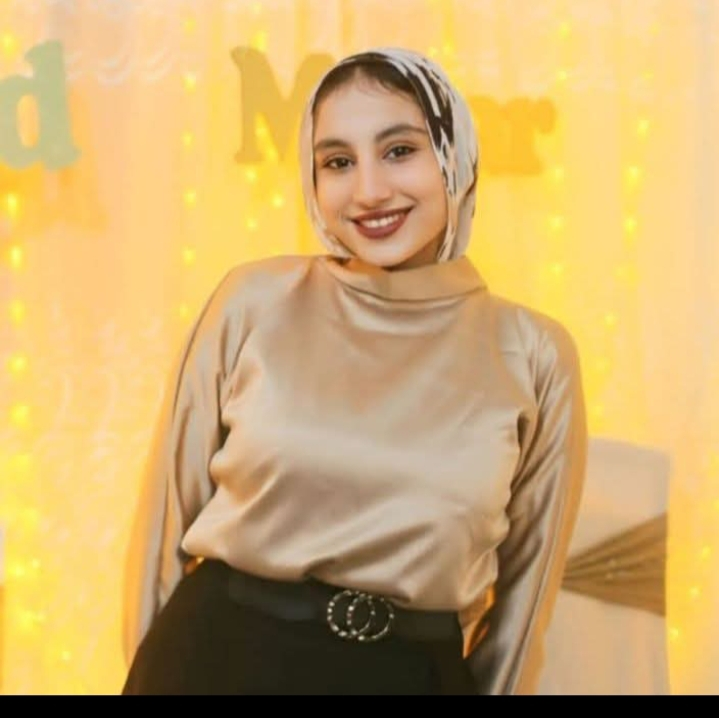

حكاياتنا المحفورة في قلبي ✨

🔥 موقف الفرنسيسكان: كنت غيران أوي لما لقيتك قاعدة جنب الكابتن وبتقولي على الممثل حلو.. مكنتش أعرف إنها غيرة بس عرفت إنك مش حد عادي عندي وعرفت وقتها إنك غالية أوي.
🎵 ليلة الجروب: لما أم محمد عملت الجروب وكنا مكسوفين.. وغنيتي لي "حد يقوله إني بحبه"، لسه فاكر صوتك وجماله ورنته في ودني.
🧸 ميدالية ستيتش: أول هدية منك.. فضلت أشم ريحتك فيها ونامت في حضني ولحد النهاردة بتنام جنبي ومعايا في كل مكان.
🍦 يوم الحقوقيين: أول حاجة جبتها الشوكولاتة والآيس كريم، أكلنا سوا وروّحنا سوا وانبسطت أوي لما قولتي يلا بينا نروح كان يوم تحفة، بس الأروع لما وديتك الشوكولاتة في الفرنسيسكان وطلعت أدهالك في الشارع وانتي مبسوطة ووقعتي المصاصة من
الفرحة.
😉 موقف أحمد كمال: يوم ما غمزت ليكي وإحنا قاعدين نبص لبعض ومش فارق لينا أي حد ونضحك، كنا في عالم لوحدنا والناس كلها في عالم.. ويوم الوافل ويوم الشاورما لما لمست إيدك وإنتي بتاخدي الكولا كان يوم حلو أوي.
🏆 يوم البطولة: من أعظم أيام حياتي، بدأ إني أكلت من إيدك أحلى كريب، وانتهى إني سمعت "بحبك" فيس تو فيس بجد عمري مهنساها حسيت احساس حلو اوي قلبي اتهز هزة موت وقعدنا نهزر وكنتي غيرانة عليا إني نايم على رجل أحمد.
🧿 عن غيرتك: إنتي أكتر حد عرفني إن اللي بيحبك أوي بيغير عليك أوي، غيرتي عليا من عيال ومن كبار ووصلت للجيم يا سماسيمو، بس أنا مبسوط وعمري ما اضيقت منها عشان ده بيثبت حبنا وعايزاني ليكي لوحدك.

.jpeg)
.jpeg)

📓 النوت بوك: النوت بوك اللي اتكتب فيها أحلى جمل من إيد أحلى بنت في الدنيا، كلامك فيها بيطمن قلبي كل ما أقرأه وبحس إنك دايما معايا.
💌 رسالة الفلانتين (14/2):
النهارده 14/2 اول فلانتين بينا وان شاءالله يكون سعيد عليكي عايز اقولك حاجات كتير وكلام كتير. عارف ان ساعات بقصر وبعمل حاجات غلط وبتعصب وبنيمك معيطه لاكن والله انا بحبك وبحبك اوي كمان ومقدرش اعيش من غير لحظه يا سما، انتي اغلي حد عندي بنتي اللي مقدرش اعيش من غيرها ولا لحظه اللي دايما بعملها ولو غلطه هصلح ليها بس عمري م اسيبها. حبيبتي اللي بعشقها وبحبها اوي ومقدرش اسيبها لحظه وان شاءالله تبقي مراتي وماما الحنينه عليا والطيبه واللي قبلها ابيض المهتمه بيا ودايما بتشجعني والسبب اني بكمل اللي بعملو ده. سما انتي غيرتي فيا حاجات كتير وعملتيني حاجات كتير ووقفتي جنبي ف مواقف كتير صعبه وسهله احنا ععدينا بمواقف كتير صعبه بس دايما كنا بنكمل العلاقه اللي ان شاءالله هتكمل لحد متبقي ف بيتي احنا عيشنا مواقف كتير حلوه زي النهارده اول مره اسمع بحبك فيس تو فيس بجد عمري مهنساها حسيت احساس حلو اوي وغيرتنا علي بعض بحبها اوي عشان ده بيثبت حبنا. عارف ان ممكن تدايقي من تحكمي بس والله عشان بحبك وخايف عليكي مبسوط اوي مت اللي وصلتي ليه ي سما بتتعلمي وتحسسني وبتبقي احلي اكتر م انتي حلوه ي سماسيمو وان شاءالله هتبقي احسن واحسن وبحب اوي وانتي بتعملي المستحيل عشاني بجد بتكبري ف نظري اكبر واكبر.. بحبك دي قليله بموت فيكي ي سماسيمو بدمنك بتنفسك ي اكسجين حياتي عايش بسببك ي نبض قلبي ي شمسي ونور طريقي ومصدر طاقتي وسعادتي. ووعد هفضل جنبك ومش هسيبك، مفيش حد بيسيب بنتو غير لما تتجوزيني عشان تروحي بيت جوزك اللي هو انا برضو ومبسوط ان الهديه عجبتك بما انو اول فلانتين قررت ان اخليكي مميزه جدا ي احلي سماسيمو عشان انتي تعبتي وتستاهلي تفرحي بجد بحبك اوي اوي ي روح قلبي ي كتكوتي ونور عيني بحبكككككك ❤️
النهارده 14/2 اول فلانتين بينا وان شاءالله يكون سعيد عليكي عايز اقولك حاجات كتير وكلام كتير. عارف ان ساعات بقصر وبعمل حاجات غلط وبتعصب وبنيمك معيطه لاكن والله انا بحبك وبحبك اوي كمان ومقدرش اعيش من غير لحظه يا سما، انتي اغلي حد عندي بنتي اللي مقدرش اعيش من غيرها ولا لحظه اللي دايما بعملها ولو غلطه هصلح ليها بس عمري م اسيبها. حبيبتي اللي بعشقها وبحبها اوي ومقدرش اسيبها لحظه وان شاءالله تبقي مراتي وماما الحنينه عليا والطيبه واللي قبلها ابيض المهتمه بيا ودايما بتشجعني والسبب اني بكمل اللي بعملو ده. سما انتي غيرتي فيا حاجات كتير وعملتيني حاجات كتير ووقفتي جنبي ف مواقف كتير صعبه وسهله احنا ععدينا بمواقف كتير صعبه بس دايما كنا بنكمل العلاقه اللي ان شاءالله هتكمل لحد متبقي ف بيتي احنا عيشنا مواقف كتير حلوه زي النهارده اول مره اسمع بحبك فيس تو فيس بجد عمري مهنساها حسيت احساس حلو اوي وغيرتنا علي بعض بحبها اوي عشان ده بيثبت حبنا. عارف ان ممكن تدايقي من تحكمي بس والله عشان بحبك وخايف عليكي مبسوط اوي مت اللي وصلتي ليه ي سما بتتعلمي وتحسسني وبتبقي احلي اكتر م انتي حلوه ي سماسيمو وان شاءالله هتبقي احسن واحسن وبحب اوي وانتي بتعملي المستحيل عشاني بجد بتكبري ف نظري اكبر واكبر.. بحبك دي قليله بموت فيكي ي سماسيمو بدمنك بتنفسك ي اكسجين حياتي عايش بسببك ي نبض قلبي ي شمسي ونور طريقي ومصدر طاقتي وسعادتي. ووعد هفضل جنبك ومش هسيبك، مفيش حد بيسيب بنتو غير لما تتجوزيني عشان تروحي بيت جوزك اللي هو انا برضو ومبسوط ان الهديه عجبتك بما انو اول فلانتين قررت ان اخليكي مميزه جدا ي احلي سماسيمو عشان انتي تعبتي وتستاهلي تفرحي بجد بحبك اوي اوي ي روح قلبي ي كتكوتي ونور عيني بحبكككككك ❤️